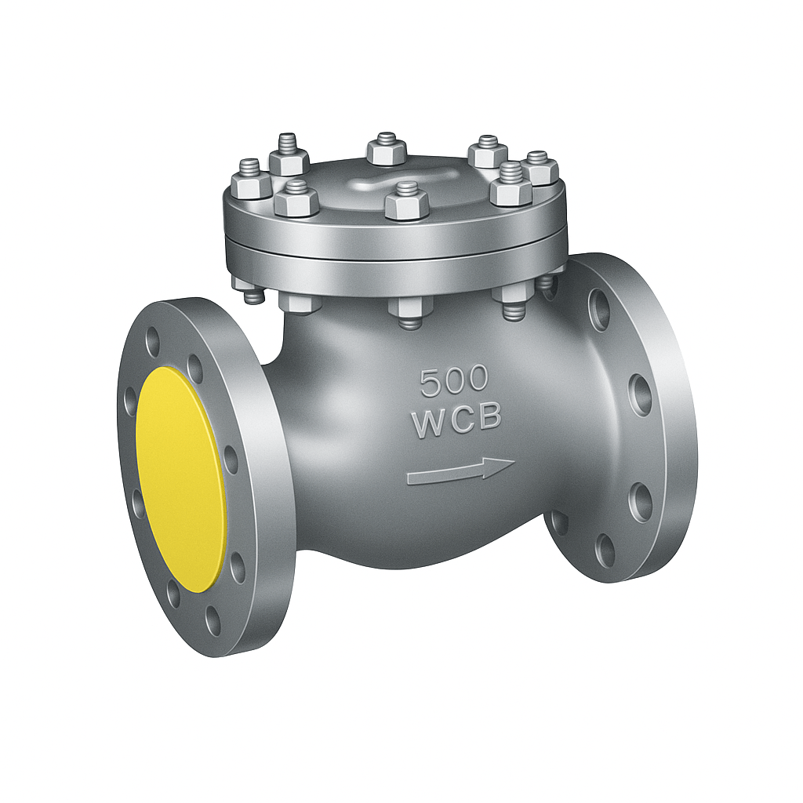

OVERVIEW
As leading KSB valves dealers in India and trusted suppliers in Mumbai, we proudly supply a complete range of KSB valves designed for diverse industrial applications.
Whether you require a KSB gate valve, globe valve, check valve, ball valve, butterfly valve, or diaphragm valve, we provide reliable, high-performance solutions tailored to meet the demands of modern industries.
Our extensive inventory includes specialized valves such as KSB cast gate valves, forged gate valves, pressure seal gate valves, forged globe valves, pressure seal globe valves, Y-type globe valves, cast globe valves, and BOA-H globe valves. Every industrial need is addressed with precision and quality.
As a leading KSB valve manufacturer partner, we ensure customers receive authentic KSB valves backed by expert service and nationwide support.
As trusted KSB valve suppliers, distributors, and export dealers, we cater to applications in water, air, gas, oil and gas, refineries, chemical, petrochemical, HVAC, and power stations. Our valves are engineered for durability, reliability, and operational efficiency.
Our comprehensive selection also features KSB NRV valves, cast check valves, dual plate check valves, single plate check valves, floating ball valves, and shut-off valves. These are available in alloy steel, cast steel, stainless steel, cast iron, and forged steel, with flanged, screwed, or welded end configurations.
We maintain a robust stock of bolted bonnet and welded bonnet valves, soft-seated globe valves, zero-leakage valves, fluoropolymer-lined valves, and corrosion-resistant valves. These ensure long-lasting performance in demanding environments.
To enhance automation and control, we supply KSB motor-operated valves, electric actuator valves, hydraulic valves, and actuated valves. We also provide specialized process control valves including on-off valves, throttling valves, isolation valves, and advanced control valves.
Every valve is backed by KSB’s reputation for reliability, superior sealing technology, ISO certification, and high operational standards, ensuring exceptional performance across industries.
Our valves support a wide range of projects in shipbuilding, energy, pipeline, and process engineering. We also provide maintenance, valve servicing, replacement valves, and spare parts to ensure uninterrupted operations.
Customers can select from heat-resistant, high-temperature, low-pressure, medium-pressure, and high-pressure valves, including IBR certified, EIL approved, and CE certified valves. These are engineered for top-notch performance under even the most demanding conditions.
At every step, we deliver quality, precision, and dependability, making us the preferred choice for KSB valves across industries worldwide.
Dealer, Supplier and Exporter of KSB Valves
Products and Capabilities
KSB products are engineered to transport or shut off fluids across a wide range of demanding applications. These include:
Quality Assurance
To ensure the highest quality and compliance with international standards, KSB Valves undergo rigorous physical testing and chemical analysis. Our state-of-the-art laboratories are equipped with modern instruments that verify the metallurgical properties of all raw materials, ensuring reliability and durability in every product.
Innovation Through Research
KSB's success is built on innovative technology, backed by dedicated in-house research and development. Our R&D efforts focus on Hydraulics, Materials technology, and Automation of pumps and valves. Through these initiatives, KSB delivers products with excellent efficiencies, energy-saving motors, and advanced control and monitoring systems, contributing to high overall energy efficiency in customer operations.
Application Industries
KSB solutions serve a wide range of industries: Building services, Process engineering, Waste water treatment, Water transport, Mining, Energy conversion, and Solids transport.

KSB CHECK VALVE
We offer a wide range of KSB Cast Check Valves, designed for reliable flow control in industries like water, gas, steam, chemicals, and petrochemicals. Made from high-grade steel, these valves are durable, manually operated, and available in sizes from 50 mm to 300 mm.
| Media | Air, Water, Gas, Steam, LPG, Chemicals |
|---|---|
| Pressure | Up to 104 bar (Low, Medium, High) |
| Temperature | Up to 593°C |
| End Connections | Screwed (BSP/BSPT/NPT), Socket Weld, Butt Weld, Flanged (#150/#300) |
| Certifications | IBR, CE, EIL |
| Power | Manual Operation |
Ideal for process industries, our valves are quality-checked and ready for high-performance applications.
Send enquiry
KSB GATE VALVE
High-performance valves known for tensile strength, durability, corrosion resistance, low maintenance, dimensional accuracy, and perfect finish. Product range includes Forged Check Valves, Cast Gate Valves, Pressure Seal Check Valves, Butterfly Valves, and more.
| Applications | Air, Gas, Steam, LPG, Chemicals, Water, Petrochemicals, Process Industries |
|---|---|
| Size | DN 50–300 mm |
| Pressure | Up to 104 bar (Low, Medium, High) |
| Temperature | Up to 593°C |
| End Connections | Screwed (BSP/BSPT/NPT), Socket Weld, Butt Weld, Flanged (#150/#300 weld-on) |
| Operation | Manual (Power Source: Manual, Automation Grade: Manual) |
| Material | Stainless Steel |
| Media | Air, Water, Gas |
| Certifications | IBR, CE, EIL, ISO |

KSB GLOBE VALVE
Globe Valve to ANSI/ASME standards with flanged ends, manufactured from Cast Steel A216 WCB. It is available with Trim 8 (Stellite/13% Chrome Steel) for Class 150/300/600 and Trim 5 (Stellite/Stellite) for Class 600, featuring a bolted bonnet, outside screw & yoke, graphite gland packing, and stainless steel/graphite gaskets. These valves are widely used in refineries, power stations, process engineering, and general industrial applications, suitable for handling water, steam, oil, gas, air, and other fluids on request.
| Suitable for | Air, Gas, Low Steam, LPG, Chemicals, Water, Petro-Chemicals & Process Industries |
|---|---|
| Size (DN) | 50 mm to 300 mm |
| Pressure (P) | Up to 104 bar |
| Temperature (tºC) | Up to 593°C |
| Material | Alloy Steel |
| Media | Air, Water, Gas |
| End Connections | Screwed (BSP/BSPT/NPT), Socket Weld, Butt Weld, Flanged #150/#300 (weld-on) |
| Certification | IBR, CE, EIL, ISO Certified |

KSB PRESSURE SEAL GLOBE VALVE / KSB HIGH PRESSURE GLOBE VALVE
Compact and durable KSB Y-type Globe Valve manufactured to ANSI/ASME standards, available with threaded (NPT), socket weld (SW), or butt weld (BW) ends. Designed with Trim 8 (Stellite/13% Chrome Steel), bolted bonnet (Class 800) or welded bonnet (Class 1500/2500), and outside screw & yoke for reliable operation in demanding conditions.
Applications: Ideal for industry, process engineering, and energy sectors, handling high, medium, and low temperature services with excellent resistance to wear and corrosion.
- High temperature & pressure resistance
- Leak-proof sealing with gland packing
- Rust & corrosion resistant
- Compact straight pattern body design
- Forged steel construction (ASTM A105 / A182 F22)
- Certified performance for critical industries

KSB FORGED gate VALVE
We supply a wide range of Forged Gate Valves, sourced from trusted vendors who use high-quality raw materials and advanced manufacturing techniques. These valves are available in multiple specifications and comply with industry standards, ensuring reliability and performance across applications.
| Applications | Air, Gas, Low Steam, LPG, Chemicals, Water, Petrochemicals & Process Industries |
|---|---|
| Size Range | DN 50–300 mm |
| Pressure | Up to 104 bar |
| Temperature | Up to 593°C |
| End Connections | Screwed, Butt Weld, Socket Weld |
| Material | High-grade Steel (Rust Resistant) |
| Operation | Manual |
| Certifications | ISO, IBR, CE, EIL |

KSB PRESSURE SEAL GATE VALVE / KSB HIGH PRESSURE GATE VALVE
Engineered to meet the highest industrial standards, the KSB High Pressure Gate Valve is designed with precision using high-quality raw materials, ensuring sturdiness, durability, and superior performance. These valves are widely appreciated for their finest quality and reliable sealing, making them ideal for demanding applications across industries. Available in multiple sizes and dimensions, they are perfectly suited for critical operations involving air, water, gas, and high-pressure media.
| Design Standard | ASME B16.34 |
|---|---|
| Size Range | 15mm to 50mm (½" to 2") |
| Pressure Class | ASA 2500# |
| Material of Construction | ASTM A105 / A182 F22 |
| Trim | Full Stellited Trim 5 |
| End Connection | Socket Weld |
| Pressure Rating | Up to 9375 PSI (Shell), 6875 PSI (Seat) |
👉 Ideal for power plants, process engineering, and heavy-duty industrial applications requiring leak-proof, high-pressure flow control.

KSB PRESSURE SEAL CHECK VALVE
Designed as per ASME B16.34, this forged steel valve ensures reliable backflow prevention with a pressure seal bonnet, swing disc design, and full Stellited Trim 5. Built for high pressure & temperature resistance, it’s ideal for power stations, process engineering, and industrial applications.
| Size Range | 15mm – 50mm (½"–2") |
|---|---|
| Pressure Class | ASA 2500# |
| Material | ASTM A105 / A182 F22 Forged Steel |
| End Connection | Socket Weld |
| Hydraulic Tested | 9375 PSI (Shell), 6875 PSI (Seat) |
| Media | Air, Water, Steam, Gas, Oil |

KSB FORGED CHECK VALVE
Engineered for reliability and durability, KSB Forged Check Valves are built from premium alloy steel and designed to handle demanding industrial conditions. With high pressure and temperature resistance, leak-proof performance, and ISO-certified quality, these valves are ideal for power stations, process industries, and general engineering applications.
| High Pressure Resistance | Up to 104 bar |
|---|---|
| Wide Temperature Range | Up to 593°C |
| Leak-Proof Sealing | Screwed, Butt Weld & Socket Weld Ends |
| Versatile Media | Air, Gas, Water, Steam, LPG & Chemicals |
| Certified Quality | IBR, CE, EIL, ISO Certified |

KSB forged Globe VALVE
Our Forged Globe Valves are built for durability, precision, and reliable performance in demanding applications. Sourced from trusted manufacturers and made with high-grade steel, these valves ensure excellent resistance to pressure, temperature, and corrosion. Ideal for air, gas, steam, water, and chemical processes, they are certified to international standards (IBR, CE, EIL, ISO) and available in multiple sizes and connections.
| Properties | High strength & rust resistance |
|---|---|
| Pressure | Suitable for low, medium & high pressure |
| Temperature | Withstands temperatures up to 593 ºC |
| Certified | IBR, CE, EIL, ISO |
| End connections | Screwed, Butt Weld, Socket Weld |